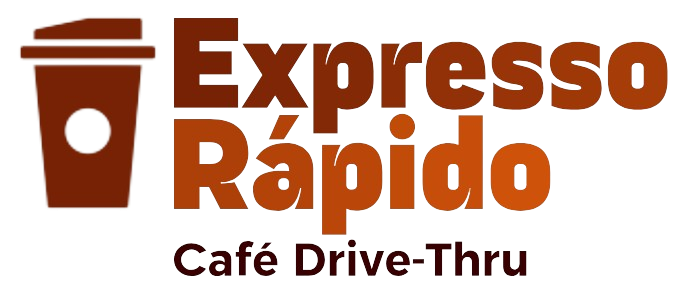
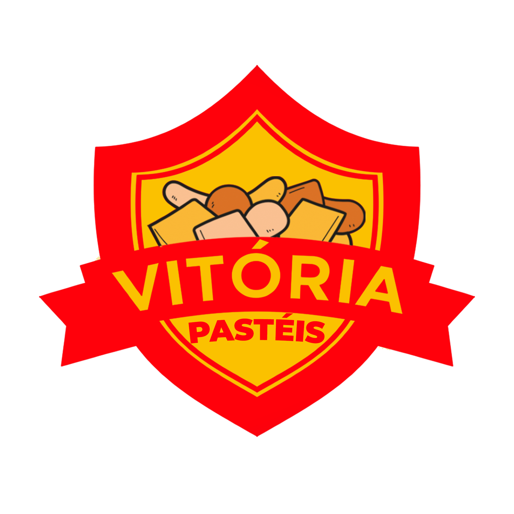
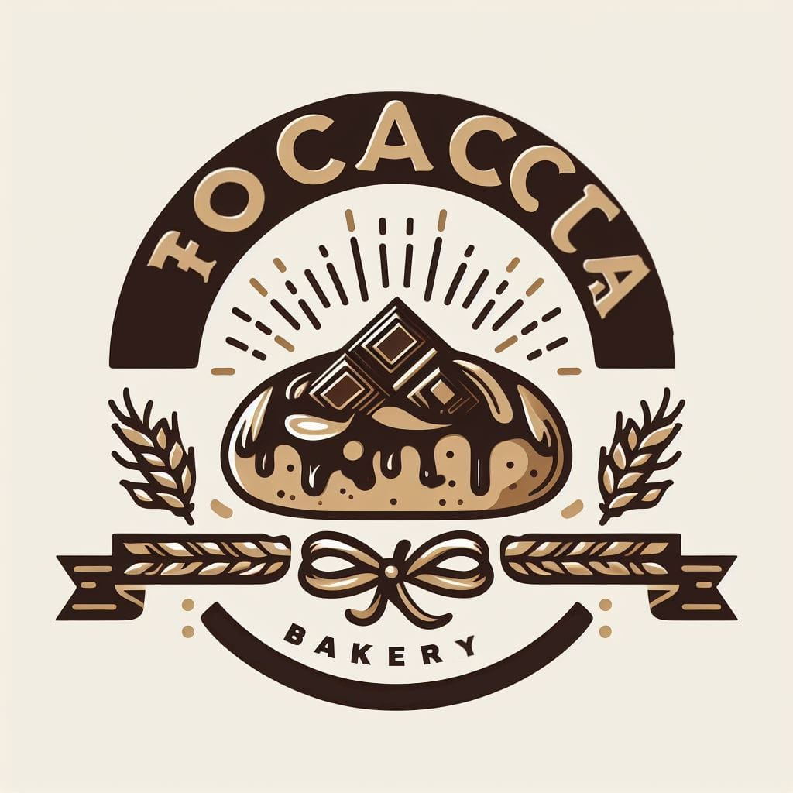
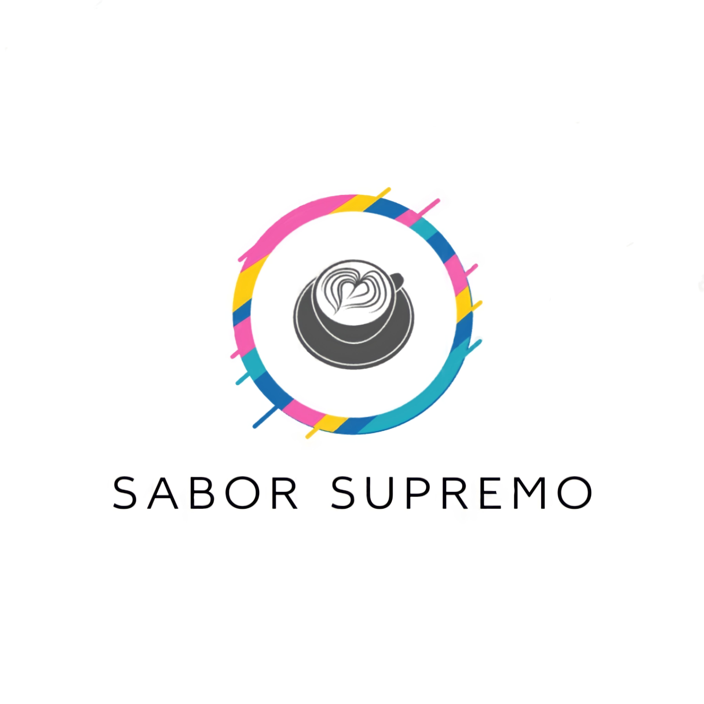

Expresso Rápido - Café Drive-Thru
|  | A Expresso Rápido é uma cafeteria inovadora que opera no formato de drive-thru, oferecendo um cardápio variado com preços acessíveis. Com diversas opções gastronômicas, nosso principal enfoque está na criação de uma experiência excepcional para os amantes de café.
Investimento: Aproximadamente R$ 150.000,00 Retorno: Em cerca de 18 meses. |
Vitória Pasteis
|  | A Vitória Pastéis destaca-se como uma empresa especializada na produção de pastéis. Nosso compromisso é oferecer aos clientes uma experiência gastronômica única, com pastéis feitos com ingredientes de alta qualidade e sabores autênticos. Com uma variedade de opções deliciosas, desde sabores clássicos até combinações inovadoras, a Vitórias Pastéis se dedica a proporcionar momentos saborosos e memoráveis para os apreciadores dessa iguaria. Conte conosco para saborear a excelência em cada mordida.
Investimento: R$ 290.000,00 Retorno: 6 meses. |
Focaccia Padaria
|  | A Focaccia Padaria destaca-se como um estabelecimento dedicado à produção e venda de alimentos assados à base de farinha. Nosso cardápio abrange uma ampla variedade de delícias, incluindo pães, biscoitos, bolos e tortas. Comprometidos em oferecer produtos assados frescos e saborosos, buscamos proporcionar uma experiência gastronômica única aos nossos clientes. Venha saborear a excelência da Focaccia Padaria, onde a tradição se encontra com o paladar contemporâneo.
Investimento: R$80.000,00 Retorno: De 8 meses a 1 ano |
Sabor Supremo
|  | Bem-vindo ao Sabor Supremo, onde cada gole é uma viagem sensorial única. Nossa cafeteria é dedicada a proporcionar um sabor inigualável, com blends cuidadosamente selecionados e métodos de preparo que destacam a excelência do café. Explore a sofisticação do Sabor Supremo, onde a paixão pelo café atinge seu ponto mais sublime.
Investimento: R$190.000,00 Retorno: De 18 meses a 20 meses. |